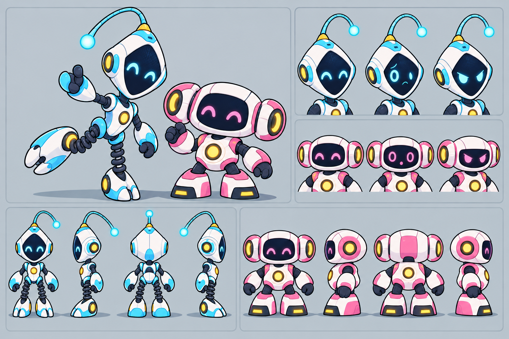
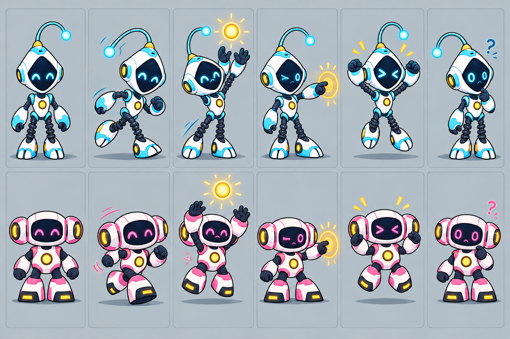

Character handoff · mascot direction A
Orbital Buddy
Direction selected · concept references in reviewThis page records the selected silhouette and gives the team one consistent place to review turnarounds and key-action poses before any runtime drawing begins.
Refined model sheet

P1 · Cyan · tall, springy silhouette
Kite-shaped head, one flexible antenna, narrow torso, spring-like legs, and split rounded feet.
P2 · Pink · broad, grounded silhouette
Wide rounded face, paired circular side sensors, compact body, short segmented limbs, and magnetic feet.
Six pose references
The sequence runs left to right in both rows: P1 on top, P2 below. These are static gesture guides, not animation frames.
01
Idle
Relaxed stance; friendly, ready face.
02
Move
Short quick step with a forward lean.
03
Catch
Reach both hands toward an energy orb.
04
Activate
Extend one hand to a reactor switch.
05
Win
Compact two-hand celebration.
06
Confused
Small head tilt; uncertain eyes.

Runtime handoff rules for the next phase
Pivot proposalPlace the character pivot at the midpoint between grounded feet, about 96% down the eventual frame. Adjust for the real gameplay camera and hover shadow.
Scale proposalSet sprite dimensions only after a 1280×720 gameplay framing mockup. Keep antenna, sensors, hands, and feet inside a shared safe margin.
Build gateBefore animation production, approve the editable redraw, exact proportions, palette, expression set, anchor, frame layout, and reduced-detail readability.